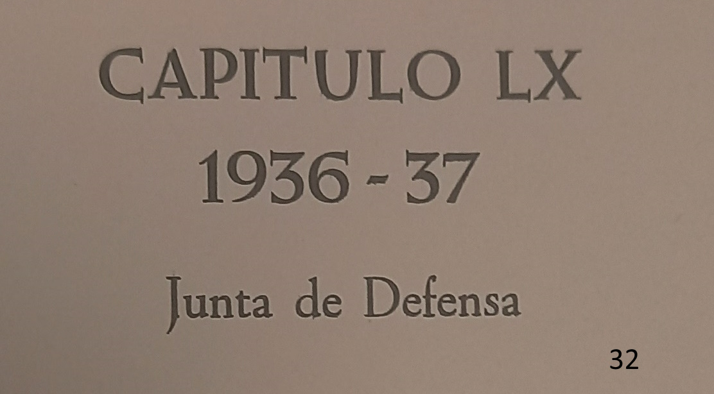

Página 32
1936 - 37
Junta de Defensa
Página 33
«Excmo. Sr.: Llevada a cabo la estampación de todas las clases de timbres de Correos en cantidad suficiente para atender el consumo de ellos en todo el territorio liberado, queda extinguida la necesidad de emplear para el franqueo de la correspondencia timbres emitidos por los Gobiernos anteriores a la fecha inicial del glorioso Movimiento, y fundado además en razones de conveniencia patriótica, es llegado el momento de retirar de la circulación todos los timbres de Correos que no hayan sido emitidos por el legítimo Gobierno de España.
»En atención a lo expuesto, se acuerda lo siguiente:
»Transcurrido el plazo de diez días, a contar de la fecha de la publicación de esta Orden, no se admitirán por las Administraciones de Correos otros timbres para el franqueo de la correspondencia, que los emitidos por el legítimo Gobierno de España, cuyas emisiones son las que a continuación se detallan: Emisión realizada en los Talleres de Portabella, Zaragoza, con arreglo a los siguientes dibujos y colores en las diversas clases:
»De 0,01 pesetas.—Dibujo el de la cifra de su precio, color verde esmeralda.
»De 0,02 pesetas.—Dibujo el de la cifra de su precio, color marrón.
»De 0,05 pesetas.—Dibujo la Catedral de Burgos, color sepia.
»De 0,10 pesetas.—Dibujo Universidad de Salamanca, color verde claro.
»De 0,15 pesetas.—Dibujo de Zaragoza, color verde oscuro.
»De 0,20 pesetas.—Dibujo del Castillo de Navarra, color rojo.
»De 0,25 pesetas.—Dibujo la Giralda de Sevilla, color rojo oscuro.
»De 0,50 pesetas.—Dibujo Patio de Los Leones de la Alhambra de Granada, color azul oscuro.
Página 34
»De 0,60 pesetas.—Dibujo la Mezquita de Córdoba, color verde claro.
»De 1,00 peseta.—Dibujo Vista de Toledo, color negro.
»De 4,00 pesetas.—Dibujo portada y soldado llevando bandera nacional, color morado y los nacionales.
»De 10,00 pesetas.—Dibujo Desembarco de Algeciras, color sepia.
»Emisión realizada en los Talleres de Hija de B. Fournier, Burgos, cuyos dibujos y colores en las diferentes clases son:
»De 0,01 pesetas.—Dibujo el de la cifra de su precio, color verde esmeralda.
»De 0,02 pesetas.—Dibujo el de la cifra de su precio, color marrón.
»De 0,05 pesetas.—Dibujo El Cid, color sepia.
»De 0,10 pesetas.—Dibujo El Cid, color verde.
»De 0,15 pesetas.—Dibujo Isabel la Católica, color verde oscuro.
»De 0,20 pesetas.—Dibujo Isabel la Católica, color violeta.
»De 0,25 pesetas.—Dibujo Isabel la Católica, color rojo.
»De 0,30 pesetas.—Dibujo Isabel la Católica, color rojo acaraminado.
»De 0,40 pesetas.—Dibujo Isabel la Católica, color naranja.
»De 0,50 pesetas.—Dibujo Isabel la Católica, color azul oscuro.
»De 0,60 pesetas.—Dibujo Isabel la Católica, color amarillo.
»De 1,00 peseta.—Dibujo Isabel la Católica, color azul acero.
»De 4,00 pesetas.—Dibujo Isabel la Católica, color laca morada.
»De 10,00 pesetas.—Dibujo El Cid, color azul.
»Emisión conmemorativa del Año Santo Compostelano, realizada en los Talleres de Hijos de Heraclio Fournier, Vitoria, cuyos dibujos y colores en sus clases son:
»De 0,15 pesetas.—Dibujo la Imagen de Santiago Apóstol, color sepia.
»De 0,30 pesetas.—Dibujo la Catedral de Santiago, color rojo acaraminado.
»De 1,00 peseta.—Dibujo el Pórtico de la Gloria, color azul y naranja.
»La Compañía Arrendataria de Tabacos, efectuará el canje de los timbres de Correos de emisiones anteriores que tuvieren las Expendedurías y por la Comisión de Hacienda se dictarán las disposiciones para realizar el canje de las emisiones de timbres de Correos que se retiran de la circulación que se encuentren en poder de la Compañía Arrendataria de Tabacos o de los particulares.
»Burgos, 21 de junio de 1937.—Segundo Año Triunfal.—Francisco G. Jordana.—Sr. Presidente de la Comisión de Hacienda.»
«Presidencia de la Junta Técnica del Estado.—Orden.
»Excmos. Sres.: Acordada por Orden de la Presidencia de la Junta Técnica del Estado, del 16 de julio próximo pasado, la estampación de tarjetas...»
Página 35
(Pie de ilustración)
Carta franqueada con signos timbrados no postales.
...postales sencillas de 0,15 pesetas y teniendo como características un tamaño de 140 por 93 milímetros llevando estampado en color violeta el escudo nacional y con las dimensiones de 29 por 24 milímetros el timbre de Correos de 0,15 pesetas, en el que se reproduce como dibujo los bustos de perfil de los Reyes Católicos, se autoriza su circulación para el Servicio de Correos en el Interior de la Nación.
»Lo que traslado a VV. EE. para su conocimiento y efectos consiguientes.
»Dios guarde a VV. EE. muchos años.—Burgos, 8 de septiembre de 1937.—Segundo Año Triunfal.—Francisco G. Jordana.»
«Presidencia de la Junta Técnica del Estado.—Orden.
»Excmos. Sres.: Habiendo llegado al conocimiento de esta Junta Técnica del Estado el hecho de haberse emitido timbres impresos —bien en la forma ordinaria o en la especial de bloque— con la inscripción de Correos, Correos de España o la de Servicio de Correos, sin la debida autorización,
Página 37
Tras el levantamiento en las Provincias africanas es constituida el día 24 de julio de 1936, la Junta de Defensa Nacional en la ciudad de Burgos.
Estaba presidida por el General Miguel Cabanellas, siendo vocales los generales Andrés Saliquet Zumeta, Miguel Ponte Mansó de Zúñiga, Emilio Mola Vidal y Fidel Dávila Arrondo, y los coroneles de Estado Mayor Federico Montaner Canet y Fernando Moreno Calderón.
Orden de 17 de noviembre de 1936. Presidencia de la Junta Técnica del Estado.
Ante la urgente necesidad de disponer de timbres de Correos que ya comenzaron a escasear en diversas provincias, se acordó por Orden de la Junta de Defensa Nacional la estampación de sellos de las diferentes clases.
Confeccionados dichos sellos de Correos se dispone por la presente Orden la puesta en circulación para el franqueo normal de la correspondencia de dos clases de timbres: uno de cinco céntimos de peseta, en sepia con un dibujo de 27 por 19 milímetros que representa la Catedral de Burgos y otro de treinta céntimos de peseta, en rojo con un dibujo de 27 por 19 milímetros que reproduce el Castillo de Navarra.
Esta serie está formada por doce valores, los dos primeros de 1 y 2 céntimos representan la cifra de su valor y los restantes son motivos arquitectónicos siendo el último la representación del Desembarco de Algeciras, primer éxito militar del entonces General Franco.
La Catedral de Burgos, reflejada en el valor de cinco céntimos de peseta, se empezó a construir en el año 1221, sobre unos restos románicos, colocando la primera piedra Fernando III el Santo y el Obispo Don Mauricio,
Página 38
realizando éste último una serie de viajes por las Catedrales europeas en construcción; de ahí se deriva la enorme influencia francesa que se encuentra en Burgos. Lo más destacable de la construcción son las dos torres, obra de Juan de Colonia, 1442-1458. El interior de la Catedral presenta forma de cruz latina, siendo la fachada de estilo gótico.
El retablo del altar mayor fue realizado por el Maestro Rodrigo de Haya y hermano Martín; el Coro obra del Maestro Felipe de Vigarni.
Las principales Capillas son: Capilla del Santísimo Cristo y Nuestra Señora de los Remedios; Capilla de la Presentación y de la Consolación; Capilla de San Martín de Sahagún; Capilla de la Visitación; Capilla del Ecce-Homo; Capilla de Santiago; Capilla de la Purificación; Capilla de los Ángeles, San Juan y Santa Casilda; Capilla de la Anunciación; Capilla de la Natividad; Capilla
Página 39
de San Nicolás y del Nacimiento; Capilla de la Concepción y Santa Ana; Capilla de Santa Tecla y finalmente la Capilla del Corpus Christi.
Como anécdota es necesaria la mención la del Papamoscas, vestido de encarnado y con una partitura en la mano que abre la boca cuando el reloj da las campanadas. Se encuentra a la izquierda de la Puerta principal.
La Universidad de Salamanca, en el valor de 10 céntimos, ocupó primeramente el Claustro de la Catedral de la ciudad salmantina, hasta que el Obispo Martín levantó el primer edificio, siendo inaugurado por Alfonso X en el siglo XIII. Duró la edificación el siglo XV y primer tercio del siglo XVI.
En las postrimerías del siglo XIX fueron rasgadas muchas ventanas, que fueron reconstruidas y a la vez se levantó un piso en las tres alas del edificio.
La fachada de estilo plateresco, tal vez la más pura existente en España, presenta un medallón con el busto de los Reyes Católicos, el escudo de armas de Carlos V y los bustos de Carlos V y su esposa. Se atribuye su realización a Enrique Egas.
Las exigencias de la enseñanza con el transcurso del tiempo motivaron un cambio general, siendo lo único que se conserva en estado primitivo la Cátedra de Fray Luis de León.
La Biblioteca cuenta con fondos de unos 100.000 volúmenes, de los que 333 son incunables y con centenares de manuscritos.
Entre los profesores y estudiantes de la Universidad han destacado en su tiempo: Nebrija, San Ignacio de Loyola, Santo Toribio de Mogrovejo, San Juan de la Cruz, Juan de Mena, Fray Luis de León, Góngora, Padre Feijoo, el Cardenal Cisneros y un largo etc. de personajes que de una manera u otra han tenido renombre en la ejecutoria de la Historia de España.
En el valor de 15 céntimos se representa la Basílica del Pilar, de la que daremos una reseña en la serie que se dedicó a la Conmemoración del XIX Centenario de la venida de la Virgen del Pilar a Zaragoza, en el año 1940.
En el valor de 25 céntimos aparece la Giralda Sevillana que se encuentra casi adosada a la Catedral, a la que sirve de campanario y tiene unos 17 metros de lado, siendo de planta cuadrada.
Si bien se sabe la época de su construcción 1184 a 1196 se desconoce el nombre del arquitecto que la levantó si bien se atribuye a Hever o Gever pero con poca base histórica.
En su construcción los almohades utilizaron restos de edificios romanos y visigóticos en su mayoría sufriendo varias recomposiciones a lo largo de los tiempos.
En 1395, tras un terremoto; en 1568 la torre fue aumentada en su altura, por el arquitecto Fernán Ruiz que la elevó 28 metros. En 1884 y 1885
Página 40
sufrió daños por efecto de los rayos que fueron reparados con singular acierto por el arquitecto D. Adolfo Fernández Casanova.
El nombre de Giralda se debe a una colosal estatua, en el segundo cuerpo de la torre, que representa a la fe, a la que desde tiempo inmemorial se la llama Giralda o Giraldilla.
El de 50 céntimos se dedica al Patio de los Leones de la Alhambra de Granada, ya reseñada en el tomo III, ocurriendo lo mismo con el 60 céntimos representativo de la Mezquita de Córdoba.
El 30 céntimos refleja el Castillo de Javier en Navarra. Lugar del nacimiento de San Francisco Javier el 7 de abril de 1506.
Fue demolido en 1516 cuando Cisneros hizo destruir todos los Castillos de Navarra, siendo restaurado y aumentado con una basílica en 1901 por el escultor Jerónimo Suñol, por orden de la Duquesa de Villahermosa, descendiente de la familia de Javier. En el mismo se conserva el crucifijo mila-

Página 41
groso del que se vió sudar sangre en vida de San Francisco Javier, siempre que el Santo Apóstol sufría alguna tribulación en las Indias. Anejo hay un colegio de misioneros inaugurado en 1904.
Este Castillo ha servido de inspiración por su simbolismo a muchos escritores. Citamos un fragmento de «El Divino Impaciente» de José María Pemán.
Yo sé hacer también de paso
el galán lindo y ligero,
de los de calzas de raso
y plumilla en el sombrero;
pero cuando llega el caso
sé en mi voluntad poner
todo el peso y el poder
con que se aploma y se agarra
en mis breñas de Navarra
mi Castillo de Javier.
El 1 pesetas representa una vista toledana; el 4 pesetas muestra un soldado con la bandera nacional ante la portada de la Catedral de Málaga cuyas obras comenzaron en 1582, según planos de Diego de Siloe, sobre el lugar donde se alzaba una mezquita, siendo inaugurada seis años después sin encontrarse finalizada su construcción. En 1631 se estrenó el Coro también sin concluir, obra de Alonso Cano.
Su estilo es grecorromano. Consta de tres naves, siendo su longitud de 117 metros, de anchura 82 y de altura en la bóveda de casi 48 metros.
Entre el retablo y las capillas laterales conserva numerosas obras de arte; estatuas, murales y cuadros de la imaginería española. El sagrario que data de principios del siglo XVI constituye una de las mejores obras del gótico de Andalucía.
Bajo la Capilla de Nuestra Señora del Pilar, hay una bóveda que sirve de sepulcro a los Obispos de la Diócesis.
La importancia de las obras que en ella se conserva forma con el edificio mismo un monumento artístico, único en su clase y estilo.
El 10 pesetas, desembarco en Algeciras hecho que se llevó a cabo hacia las siete de la mañana del 19 de julio de 1936 siendo el primer barco que cruzó el Estrecho, el Destructor Churruca, aún con mando nacional, que transportaba al Tabor n.º 3 de Regulares de Ceuta; en convoy con éste venía el mercante Ciudad de Algeciras que traía a bordo otro Escuadrón de Regulares.
El 5 de agosto por la tarde se hicieron a la mar desde Ceuta el Guardacostas Kert, el cañonero Dato, el mercante Araujo y las motonaves Ciudad de
Página 42
Alicante y Ciudad de Ceuta. Hicieron una arriesgada travesía al final de la cual fueron sorprendidos por el destructor republicano Alcalá Galiano, que entró en combate con el cañonero Dato mientras desembarcaban las tropas.
Gracias a este convoy arribaron a la Península 2.500 hombres del Ejército Regular y Tercio, con baterías, artillería de campaña, a la vez que tropas y material de Ingenieros y Sanidad.
La serie fue realizada por litografía, en Zaragoza, en la imprenta de M. Portabella, sobre papel blanco con un dentado de 10 3/4 y 11 1/2 de línea, fueron impresos en hojas de 100 sellos los valores de 1 y 2 céntimos y de 50 el resto de los valores.
El diseñador de la serie fue José López Sánchez Toda. Tras presentar los diseños fueron obtenidas pruebas en negro. Del 4 pesetas se hicieron dos pruebas una en negro y la segunda en negro y con la bandera en sus colores.
Posteriormente se hicieron los reglamentarios ensayos de color, esta vez en verde y castaño, exceptuando el 10 pesetas que se hizo en rosa y violeta.
Los valores fueron saliendo progresivamente; los primeros, los ya mencionados en la Orden y los últimos (19 de octubre de 1937) los 4 y 10 pesetas. Se notará una diferencia entre los grupos emitidos antes y después de la formación del Gobierno Nacional, pues los segundos carecen de la leyenda JUNTA DE DEFENSA NACIONAL: siendo éstos cuatro valores 10 y 50 céntimos y 4 y 10 pesetas.
Se conocen de todos los valores de la serie, en los que cambia la tonalidad del color designado; además los valores de un céntimo que aparece en color castaño rojo y un dos céntimos verde amarillento, ambos sin dentar y un 10 pesetas en color gris negruzco. Estos tres ejemplares pueden ser considerados errores de color puesto que no tienen nada que ver con la tonalidad de los colores adoptados.
De algunos valores de esta serie se hicieron varias tiradas siendo uno de los defectos a que se dio lugar a la diferencia del papel utilizado, que es más delgado en la primera. Los valores impresos en este tipo de papel son los siguientes 1-2-5 y 30 céntimo y 1 peseta. En papel cartón existe el valor de 4 pesetas que aparece también en papel estucado.
Página 43
Antes de enumerar éstas, vamos a hacer una ligera referencia a la existencia en el valor de 30 céntimos de varios tipos diferentes motivados por la composición de los pie de imprenta.
Son tres y sus diferencias radican en su tamaño y características de las letras. También la palabra ESPAÑA participa y con algunos de sus detalles permite una más fácil distinción de estos tres tipos.
En el 5 céntimos aparece una mancha blanca formada por la falta de parte de las letras NT de JUNTA y la primera N de NACIONAL, en otros ejemplares aparece la O de NACIONAL más pequeña.
En el 15 céntimos se conocen dos variedades; una mancha de color en la Ñ y otra la palabra ZARAGOZA aparece la G con cedilla.
En el valor de 30 céntimos, aparte de las diferencias ya mencionadas, se encuentran tres variantes, dos de ellas en la P de ESPAÑA; una el marco sobre la letra se encuentra roto y en la segunda hay un punto de color en la parte inferior de la letra; la tercera es otro punto, esta vez blanco entre las dos cifras del valor.
En el 60 céntimos aparece otros dos defectos, uno en la palabra CORDOBA en la que falta la primera O, probablemente producida por la rotura del cliché y la otra la columna, más próxima a la palabra ya mencionada, se encuentra rota.
En el 4 pesetas algunos ejemplares presentan una franja blanca entre los colores de la bandera, debido al probable mal ajuste al realizar la tirada.
Página 44
A pesar de esta diferencia de color, también fueron cometidos errores pues se sobrecargaron algunos pliegos de las variedades de color de la serie base.
Lo mismo que la serie normal presenta las sobrecargas de SPECIMEN, MUESTRA y C.U.P.P.
Página 45
Sin dentar fueron emitidas 3.000 series para el correo aéreo y el mismo número para los valores de la serie ordinaria 15, 30 y 40 céntimos, siendo de 2.000 para el resto.
Las series sobrecargadas sin dentar apenas si circularon, como ocurrió con la serie dentada puesto que los congresistas y entidades oficiales utilizaron la otra serie, es decir la serie base.
Mostramos un bloque de cuatro de esta serie oficial sin dentar con matasellos especial preparado para el Tercer Congreso Postal Panamericano.